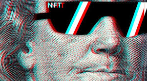
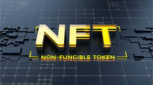
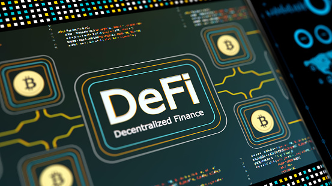

Our Special Trades Investment Package
Aspen Financial Management offers Special trades investment packages to clients with available investment capital of $500,000 or More. Our Experienced Brokers and Traders have comprehensively studied the Digital Space and continuously carry out useful researches. The Special Trade package is a combination of different unique strategies (NFTs, IDO/ERC 20 Portfolio, Initial Exchange Offering & Decentralized Finance “DEFI”) to generate an enormous return after the specified trading days. With a good entry time, we have projected making a minimum ROI of 400% in 3 months.
Non Fungible Tokens
NFTs have been taking the internet by storm and have simply doubled their total volume in USD in the month of February alone. So what are these digital assets selling for fortunes, from niche marketplaces to world-famous auction house Christie’s?
 
An NFT is a non-fungible token existing on a blockchain. Non-fungible tokens or NFTs are cryptographic assets on blockchain with unique identification codes and metadata that distinguish them from each other. Unlike cryptocurrencies, they cannot be traded or exchanged at equivalency. This differs from fungible tokens like cryptocurrencies, which are identical to each other and, therefore, can be used as a medium for commercial transactions.
A non-fungible token is a unique token that isn’t easily exchangeable with another. The foremost use case is artworks. Artworks have been selling on the blockchain for millions of dollars (or in this case a blockchain native currency, Ethereum). Examples abound but the most famous NFT artist so far is Beeple who first sold 21 pieces of artwork on digital marketplace Nifty Gateway for a total of $3.5 million. He then went on to sell his masterpiece “EVERYDAYS: THE FIRST 5000 DAYS” at Christie’s for $6.5 million. Beeple is Mike Winkelmann, previously a graphic designer from Charleston South Carolina.
What you need to know
NFTs are unique cryptographic tokens that exist on a blockchain and cannot be replicated. NFTs can be used to represent real-world items like artwork and real-estate. "Tokeninzing" these real-world tangible assets allows them to be bought, sold, and traded more efficiently while reducing the probability of fraud. NFTs can also be used to represent peoples identities, property rights, and more. Much of the current market for NFTs is centered around collectibles, such as digital artwork, sports cards, and rarities. Perhaps the most hyped space is NBA Top Shot, a place to collect non-fungible tokenized NBA moments in a digital card form. Some of these cards have sold for millions of dollars. Recently, Twitter CEO, Jack Dorsey, tweet a link to a tokenized version of the first tweet ever written where he wrote "just setting up my twttr." The NFT version of the first-ever tweet has already been bid up to $2.5 million.
NFTs can also democratize investing by fractionalizing physical assets like real estate. It is much easier to divide a digital real estate asset among multiple owners than a physical one. That tokenization ethic need not be constrained to real estate; it can be extended to other assets, such as artwork. Thus, a painting need not always a single owner. Its digital equivalent can have multiple owners, each responsible for a fraction of the painting. Such arrangements could increase its worth and revenues.
The most exciting possibility for NFTs lies in the creation of new markets and forms of investment. Consider a piece of real estate parceled out into multiple divisions, each of which contains different characteristics and property types. One of the divisions might be next to a beach while another is an entertainment complex and, yet another, is a residential district. Depending on its characteristics, each piece of land is unique, priced differently, and represented with an NFT. Real estate trading, a complex and bureaucratic affair, can be simplified by incorporating relevant metadata into each unique NFT.
With Aspen Financial Management, when you invest in our NFT portfolio, we will help you claim a stake in massive upcoming legitimate token sales. We are able to purchase them at the right time and flip them for profits on your behalf, or just purchase and hold while transferring the asset ownership to you. With a good entry time, we have projected making a minimum return of 400% within 3 months based on the size of capital invested in the portfolio while having your seed capital protected.
IDO/ERC 20 Portfolio
Initial dex offerings, or IDOs, are tokens that represent any type of asset hosted on a decentralized exchange (DEX) — an IDO is when a project launches a token through a decentralized liquidity exchange. IDOs can be created for anything from cryptocurrency to a music album, to aether powered battle ships. IDOs offer businesses a tool for engaging their communities in an economy that both enriches their products and services while allowing them to make smart business decisions regarding their assets.
In the same way that traditional startups receive venture capital before launching, projects issuing initial DEX offerings receive financing from individual investors. Unlike an initial public offering, investors in initial dex offerings never own any equity in the project.
IDOs have some benefits that may make them more attractive than ICOs and IEOs: immediate liquidity, immediate trading and lower costs for listing.
What is ERC 20 and what does it provide for an Aspen Investor?
The popular cryptocurrency and blockchain system Ethereum is based on the use of tokens, which can be bought, sold, or traded. Ethereum was launched in 2015, and since then it has become one of the driving forces behind the popularity of cryptocurrency. In the Ethereum system, tokens represent a diverse range of digital assets, such as vouchers, IOUs, or even real-world, tangible objects. Essentially, Ethereum tokens are smart contracts that make use of the Ethereum blockchain.
And that is why at Aspen Financial Management we tailor our clients need and create a diversified portfolio inclusive of new and high prospective offerings in the digital space.
What Is ERC-20?
One of the most significant Ethereum tokens is known as ERC-20. ERC-20 has emerged as the technical standard; it is used for all smart contracts on the Ethereum blockchain for token implementation and provides a list of rules that all Ethereum-based tokens must follow.
ERC-20 is similar, in some respects, to bitcoin, Litecoin, and any other cryptocurrency; ERC-20 tokens are blockchain-based assets that have value and can be sent and received. The primary difference is that instead of running on their own blockchain, ERC-20 tokens are issued on the Ethereum network.
Plenty of well-known digital currencies use the ERC-20 standard, including Maker (MKR), Basic Attention Token (BAT), Augur (REP), and OmiseGO (OMG).
Aspen Financial Management board members are in connection with great development teams precisely developing cryptocurrency using the ERC 20 token standard and history has proven to give one of the best projects yields.
Our duty is to discover the best opportunities while maximizing benefits at minimized risks levels using upper echelon risk management techniques.
With up to $500,000 worth of Ethereum, investors are projected to receive a minimum of 400% ROI after 3 months of trades when they invest in this portfolio.
Decentralized Finance
DeFi is short for “decentralized finance,” an umbrella term for a variety of financial applications in cryptocurrency or blockchain geared toward disrupting financial intermediaries.
DeFi draws inspiration from blockchain, the technology behind the digital currency bitcoin, which allows several entities to hold a copy of a history of transactions, meaning it isn’t controlled by a single, central source. That’s important because centralized systems and human gatekeepers can limit the speed and sophistication of transactions while offering users less direct control over their money. DeFi is distinct because it expands the use of blockchain from simple value transfer to more complex financial use cases.
Ethereum applications
Most applications that call themselves “DeFi” are built on top of Ethereum, the world’s second-largest cryptocurrency platform, which sets itself apart from the Bitcoin platform in that it’s easier to use to build other types of decentralized applications beyond simple transactions. These more complex financial use cases were even highlighted by Ethereum creator Vitalik Buterin back in 2013 in the original Ethereum white paper.
That’s because of Ethereum’s platform for smart contracts – which automatically execute transactions if certain conditions are met – offers much more flexibility. Ethereum programming languages, such as Solidity, are specifically designed for creating and deploying such smart contracts.
For example, say a user wants his or her money to be sent to a friend next Tuesday, but only if the temperature climbs above 90 degrees Fahrenheit according to weather.com. Such rules can be written in a smart contract.
With smart contracts at the core, dozens of DeFi applications are operating on Ethereum, some of which are explored below. Ethereum 2.0, a coming upgrade to Ethereum’s underlying network, could give these apps a boost by chipping away at Ethereum’s scalability issues.
The most popular types of DeFi applications include:
Decentralized exchanges (DEXs): Online exchanges help users exchange currencies for other currencies, whether U.S. dollars for bitcoin or ether for DAI. DEXs are a hottype of exchange, which connects users directly so they can trade cryptocurrencies with one another without trusting an intermediary with their money.
Stablecoins: A cryptocurrency that's tied to an asset outside of cryptocurrency (the dollar or euro, for example) to stabilize the price.
Lending platforms: These platforms use smart contracts to replace intermediaries such as banks that manage lending in the middle.
"Wrapped" bitcoins (WBTC): A way of sending bitcoin to the Ethereum network so the bitcoin can be used directly in Ethereum's DeFi system. WBTCs allow users to earn interest on the bitcoin they lend out via the decentralized lending platforms described above.
Prediction markets: Markets for betting on the outcome of future events, such as elections. The goal of DeFi versions of prediction markets is to offer the same functionality but without intermediaries.
In addition to these apps, new DeFi concepts have sprung up around them:
Yield farming: For knowledgeable traders who are willing to take on risk, there's yield farming, where users scan through various DeFi tokens in search of opportunities for larger returns.
Liquidity mining: When DeFi applications entice users to their platform by giving them free tokens. This has been the buzziest form of yield farming yet.
Composability: DeFi apps are open source, meaning the code behind them is public for anyone to view. As such, these apps can be used to "compose" new apps with the code as building blocks.
Money legos: Putting the concept "composability" another way, DeFi apps are like Legos, the toy blocks children click together to construct buildings, vehicles and so on. DeFi apps can be similarly snapped together like "money legos" to build new financial products.
Initial Exchange Offering
An Initial Exchange Offering, commonly referred to as an IEO, is a fundraising event that is administered by an exchange. In contrast to an Initial Coin Offering (ICO) where the project team themselves conduct the fundraising, an Initial Exchange Offering means that the fundraising will be conducted on a well-known exchange’s fundraising platform, such as Binance Launchpad, where users can purchase tokens with funds directly from their own exchange wallet.
The ICO fever in 2017 proved to be a very high-risk environment for individuals wanting to participate in new blockchain project token releases, from accidentally sending funds to the wrong wallet, or some project teams absconding with funds.
What are the Benefits of an IEO?
For a user, an IEO is easy to participate in as they don’t need to manage on-chain transactions with different wallets on different blockchains. Instead, a user only needs funds in their account and can participate completely through the trusted website’s interface. Additionally, the exchange is staking its reputation behind the projects on its platform, offering a higher degree of trust behind the project.
For a project looking to raise funds, an IEO offers the promise of an immediate userbase that can see their product, and depending on the size of the exchange’s audience, could mean that the project can reduce their outside marketing funnels for fundraising, allowing them to focus only on the development of their product.
Due to the nature of IEO's, it's impossible to lose your funds if your seeds were not successful in the lottery as per exchange thereby maintaining a 100% capital guarantee.
Aspen Financial Management traders' are sophisticated investors with years of experience in IPO's who bring on their skills and experience to the crypto industry and other disruptive markets. We prepare your account for IEO's and yield farming investments by performing a vast due diligence across multiple exchanges offering any of these services. Should you decide to subscribe to this plan, your trader will inform you if your funds will be invested in IEO or Yield Farming.
For IEO's, tokens will be purchased at a very cheap price before launch [on exchange by pooling multiple accounts with maximum credits on exchange to optimise the chances of success on launch day and will be traded continuously to meet the contract demands.
A minimum of $500,000 is required to invest in this portfolio to generate an ROI of 400% in a maximum period of 3 months while offering a 100% money back guarantee.